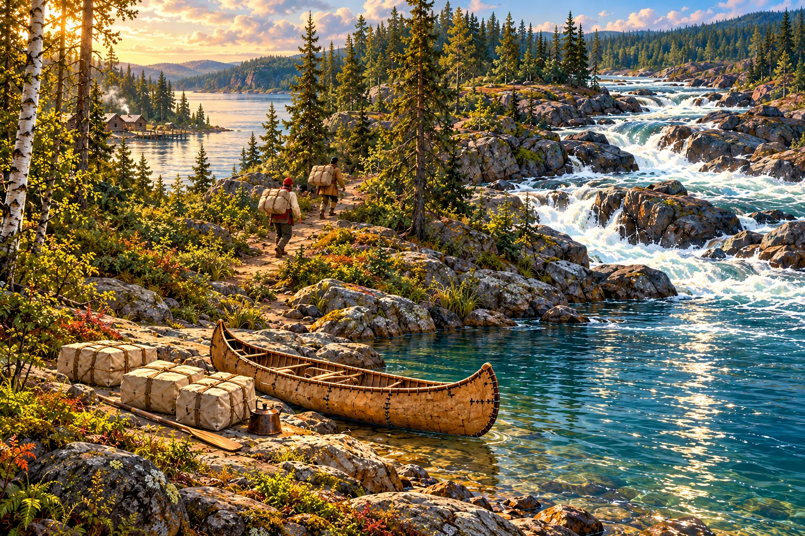
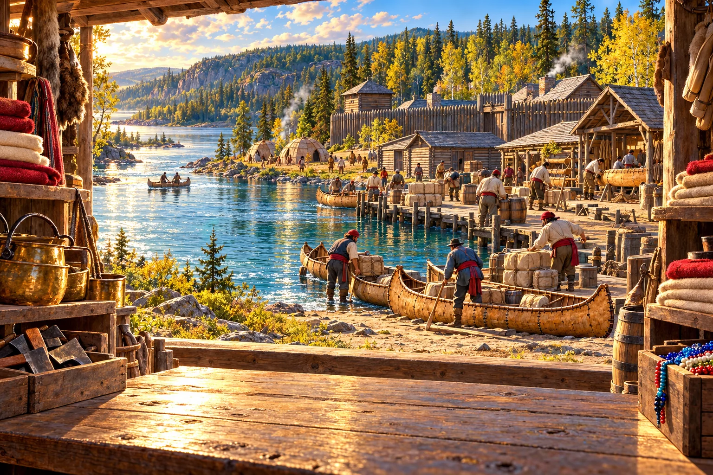

The routes came first.
Indigenous peoples used and knew these waterways long before the trading companies arrived. At Fort William, Anishinaabe knowledge, guiding, food, and canoe technology helped the trade work.
Fort William Historical Park ↗A Fur Trade Journey

THE INLAND WATERWAYS 1809Steer around rocks. Follow the river to the gold landing. ← → or A / D · Space pauses
Choose a load. Tap the trail to walk. Watch for roots. → · One step Space · Walk / pause ↑ · Careful step R · Rest

Modern outline for orientation. Dashed lines are simplified trading connections.
Use these notes to connect the map with the story behind it.
Indigenous peoples used and knew these waterways long before the trading companies arrived. At Fort William, Anishinaabe knowledge, guiding, food, and canoe technology helped the trade work.
Fort William Historical Park ↗The North West Company’s network connected Montreal, Fort William, and the interior. Hudson’s Bay Company posts connected Hudson Bay with inland trade. Both depended on Indigenous trading networks and relationships.
Parks Canada: York Factory ↗A portage means carrying a canoe and cargo over land between waterways or around an obstacle. Kakabeka Falls on the Kaministiquia River required travellers to take an overland route around the falls.
Ontario Parks: the historic portage ↗This preview uses present-day geography to help you find places. The dashed connections are a simplified overview; they do not trace every bend, lake, or portage. Company connections do not represent ownership of Indigenous lands.